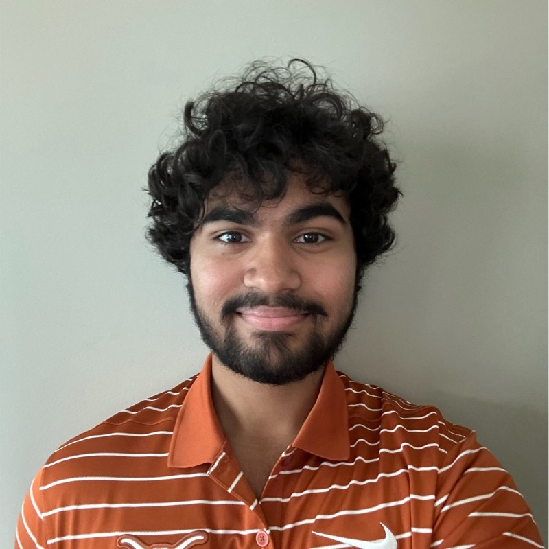

I’m a University of Texas at Austin student specializing in Electrical and Computer Engineering with a focus on backend software engineering and distributed systems. Recently completed a Software Engineering internship at DraftKings on the Backend Pick6 Team, where I built scalable, event-driven infrastructure using Kafka, MySQL, and .NET to power high-volume fantasy gaming products, supporting millions of daily requests. Passionate about designing and delivering reliable, high-performance systems that enable innovation at scale.
Email: nirmaydas99@gmail.com